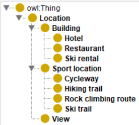
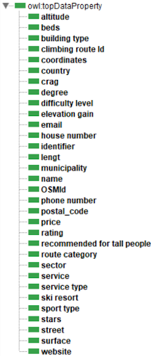

Trentino Territory & Tourism Facilties
Dongili Lorenzo, Grotto Giulia, Sacchet Stefano
View Project on GithubPurpose
The goal of this project is to build a Knowledge Graph (KG) that stores, organizes, and provides easy access to information about tourist facilities in the Trentino region, with a specific focus on outdoor activities. The KG will serve as a centralized knowledge hub, connecting tourists, travel planners, and local businesses to the wealth of outdoor opportunities the region has to offer, such as hiking trails, walks, climbing spots, cycle routes and so on
Domain of Interest (DoI)
The Domain of Interest for this project is the Trentino region in the year 2024, with a particular focus on outdoor activities.The geographical scope of the project spans the entire region, encompassing its natural landscapes and alpine terrains, providing tourists with a rich selection of outdoor activities. Key features of domain include: Mountain Adventure: Activities include climbing, via ferrata, skiing, and trekking, offering experiences for all skill levels across Trentino alpine landscapes. Sustainable Tourism and Ecotourism: Eco-friendly options like wildlife observation, botanical walks, and guided tours focused on local flora and fauna designed to minimize environmental impact.
Personas, Scenarios, and Competency questions
Expanding on the project's initial purpose, we define its scope more precisely through with the use of scenarios and personas. These user-focused representations demonstrate how different individuals might interact with the knowledge graph to achieve their objectives. By outlining various scenarios, we provide a concrete illustration of the knowledge graph's practical applications and its relevance to user needs. All tables for the personas, scenarios and Competency Questions can be found in the report.
ER Model
Thanks to the Competency Questions, we can identify the terms and concepts which will be used to define the entity types and the relative properties, to be considered in the final KG. These concepts help to formalize the purpose in an ER model. This diagram summarizes the key aspects to be addressed by the knowledge layer of the final Knowledge Graph and has guided the subsequent stages of development.
Data Resources
For Hotel and Ski slope, resources from DatiOpen.it were used to gain data. Climbing Route data was obtained from Kaggle , while information on Hiking Trails, Rental Shops, Restaurants, Cycle Routes, and Viewpoints was sourced directly from OpenStreetMap (OSM). The data underwent thorough cleaning and standardization through Python scripts, during which additional properties such as coordinates and elevation were incorporated. Finally, the processed data was consolidated into CSV files you can find on GitHub
Teleontology
In the Knowledge Definition phase, we combined the gathered information resources useful to our KGE project, the formalized purpose, and the open knowledge catalog, using the Protégé development tool. The output is the final teleontology, used for the construction of the KG. To ensure reusability and provide a robust structure for our model, we relied as much as possible to the schema of Open Street Map, given the fact that we have the majority of eTypes with data coming from it.
eTypes
Data Properties
Knowledge Graph
The final stage involves the creation of the KG from the data resources cleaned and aligned, plus the Teleontology(ETG). Thanks to Karma Data Integration tool, the resulting Knowledge Graph consists of 11 entity types, namely: Location, Building, Hotel, Restaurant, Ski Rental, View, Sport Location, Cycleway, Hiking Trail, Rock Climbing Route, and Ski Trail, 32 data properties, and 0 object properties. This final KG has been used to answer the Competency Questions through SPARQL queries. You can find the implemented queries on GitHub.